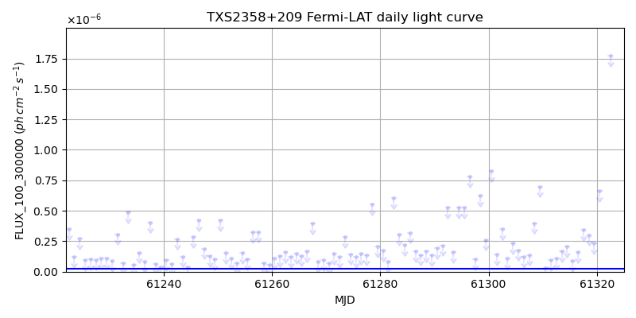
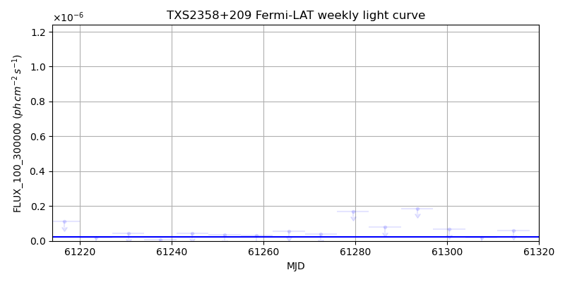
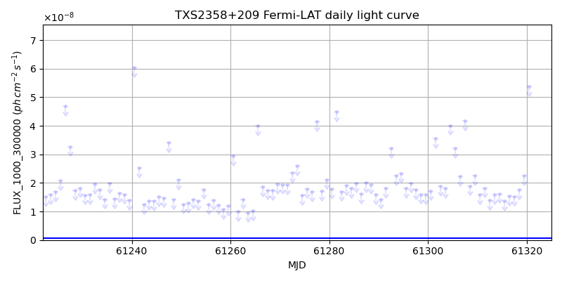
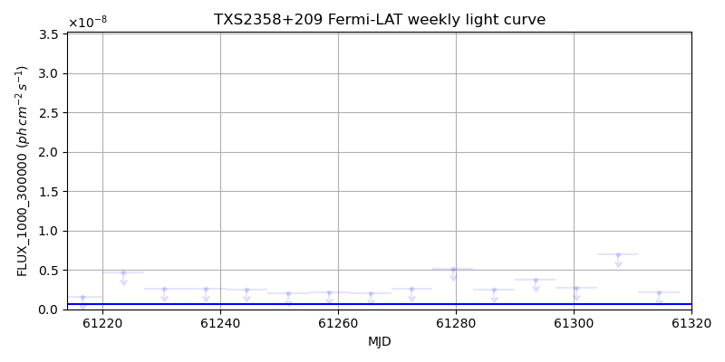

LAT Lightcurve site: https://fermi.gsfc.nasa.gov/ssc/data/access/lat/msl_lc/source/TXS_2358p209
NED: Query
Time of last update of this page: UT: 2026-10-10 15:10 (MJD: 61323.632)
| Property | Value |
|---|---|
| R.A. | 0:01:32.40 |
| Dec. | 21:13:37.2 |
| z | 1.106 |
| 3FGL SpectrumType | LogParabola |
| 3FGL PL Index | |
| 3FGL Flux_100_300000 | 2.29e-08 1 / (s cm2) |
| 3FGL Flux_1000_300000 | 6.11e-10 1 / (s cm2) |
| 3FGL Flux >200 GeV | 3.15e-17 1 / (s cm2) |
| 3FGL Extrap. Crab >200 GeV | 0.00 |
| 3FGL Flux After EBL Absorption >200GeV | 6.67e-19 1 / (s cm2) |
| 3FGL EBL Crab Fraction >200GeV | 0.00 |

| MJD | dMJD | Flux | dFlux | Frac3FGL | FracCrab>200GeV | EBLFracCrab>200GeV |
|---|---|---|---|---|---|---|
| 61318.50 | 0.50 | 3.01e-07 | 0.00e+00 | 0.00 | 0.00 | 0.00 |
| 61319.50 | 0.50 | 2.31e-07 | 0.00e+00 | 0.00 | 0.00 | 0.00 |
| 61320.50 | 0.50 | 6.63e-07 | 0.00e+00 | 0.00 | 0.00 | 0.00 |
| 61321.50 | 0.50 | 2.99e-06 | 0.00e+00 | 0.00 | 0.00 | 0.00 |
| 61322.50 | 0.50 | 1.77e-06 | 0.00e+00 | 0.00 | 0.00 | 0.00 |

| MJD | dMJD | Flux | dFlux | Frac3FGL | FracCrab>200GeV | EBLFracCrab>200GeV |
|---|---|---|---|---|---|---|
| 61286.50 | 3.50 | 7.96e-08 | 0.00e+00 | 0.00 | 0.00 | 0.00 |
| 61293.50 | 3.50 | 1.86e-07 | 0.00e+00 | 0.00 | 0.00 | 0.00 |
| 61300.50 | 3.50 | 6.78e-08 | 0.00e+00 | 0.00 | 0.00 | 0.00 |
| 61307.50 | 3.50 | 1.97e-08 | 0.00e+00 | 0.00 | 0.00 | 0.00 |
| 61314.50 | 3.50 | 6.09e-08 | 0.00e+00 | 0.00 | 0.00 | 0.00 |

| MJD | dMJD | Flux | dFlux | Frac3FGL | FracCrab>200GeV | EBLFracCrab>200GeV |
|---|---|---|---|---|---|---|
| 61318.50 | 0.50 | 1.76e-08 | 0.00e+00 | 0.00 | 0.00 | 0.00 |
| 61319.50 | 0.50 | 2.26e-08 | 0.00e+00 | 0.00 | 0.00 | 0.00 |
| 61320.50 | 0.50 | 5.37e-08 | 0.00e+00 | 0.00 | 0.00 | 0.00 |
| 61321.50 | 0.50 | 5.01e-07 | 0.00e+00 | 0.00 | 0.00 | 0.00 |
| 61322.50 | 0.50 | 3.70e-07 | 0.00e+00 | 0.00 | 0.00 | 0.00 |

| MJD | dMJD | Flux | dFlux | Frac3FGL | FracCrab>200GeV | EBLFracCrab>200GeV |
|---|---|---|---|---|---|---|
| 61286.50 | 3.50 | 2.47e-09 | 0.00e+00 | 0.00 | 0.00 | 0.00 |
| 61293.50 | 3.50 | 3.80e-09 | 0.00e+00 | 0.00 | 0.00 | 0.00 |
| 61300.50 | 3.50 | 2.72e-09 | 0.00e+00 | 0.00 | 0.00 | 0.00 |
| 61307.50 | 3.50 | 6.95e-09 | 0.00e+00 | 0.00 | 0.00 | 0.00 |
| 61314.50 | 3.50 | 2.16e-09 | 0.00e+00 | 0.00 | 0.00 | 0.00 |
--------------------------------------------------------- Using user-supplied coords: 0:01:32.40 21:13:37.2 2000 --------------------------------------------------------- FLWO UT night of: 2026-10-11 Local Sid. @ Midnight: 00:55 Sunset (-15.0) (local, UT): 19:04 02:04 Sunrise (-15.0) (local, UT): 05:18 12:18 Moonrise (local, UT): Moonset (local, UT): Moon phase: 0.01 --------------------------------------------------------- AzTime LSID UT Obj_el Obj_az Mn_el Mn_az Sep. --------------------------------------------------------- 19:04 19:58 02:04 35.2 84.9 -16.1 264.2 160.9 19:34 20:29 02:34 41.6 88.5 -22.3 267.8 160.7 20:04 20:59 03:04 48.0 92.5 -28.5 271.5 160.5 20:34 21:29 03:34 54.3 97.2 -34.7 275.4 160.3 21:04 21:59 04:04 60.6 102.9 -40.8 279.7 160.1 21:34 22:29 04:34 66.8 110.5 -46.8 284.6 159.8 22:04 22:59 05:04 72.5 122.2 -52.7 290.5 159.6 22:34 23:29 05:34 77.3 142.1 -58.4 297.7 159.3 23:04 23:59 06:04 79.7 175.7 -63.6 307.3 159.1 23:34 00:29 06:34 78.1 211.7 -68.1 320.3 158.8 00:04 00:59 07:04 73.7 234.4 -71.3 338.2 158.5 00:34 01:29 07:34 68.1 247.3 -72.6 0.4 158.2 01:04 01:59 08:04 62.0 255.7 -71.5 22.7 158.0 01:34 02:30 08:34 55.7 261.7 -68.3 40.8 157.7 02:04 03:00 09:04 49.4 266.5 -63.9 54.1 157.4 02:34 03:30 09:34 43.0 270.6 -58.7 63.8 157.1 03:04 04:00 10:04 36.6 274.3 -53.1 71.2 156.9 03:34 04:30 10:34 30.2 277.9 -47.3 77.2 156.6 04:04 05:00 11:04 23.9 281.3 -41.4 82.2 156.4 04:34 05:30 11:34 17.7 284.7 -35.3 86.6 156.1 05:04 06:00 12:04 11.6 288.2 -29.2 90.6 155.9 05:18 06:14 12:18 8.9 289.8 -26.5 92.4 155.8 --------------------------------------------------------- Dark hours >55 deg.: 5.00 srcstart (UT): 2026-10-11 03:37 srcend (UT): 2026-10-11 08:37